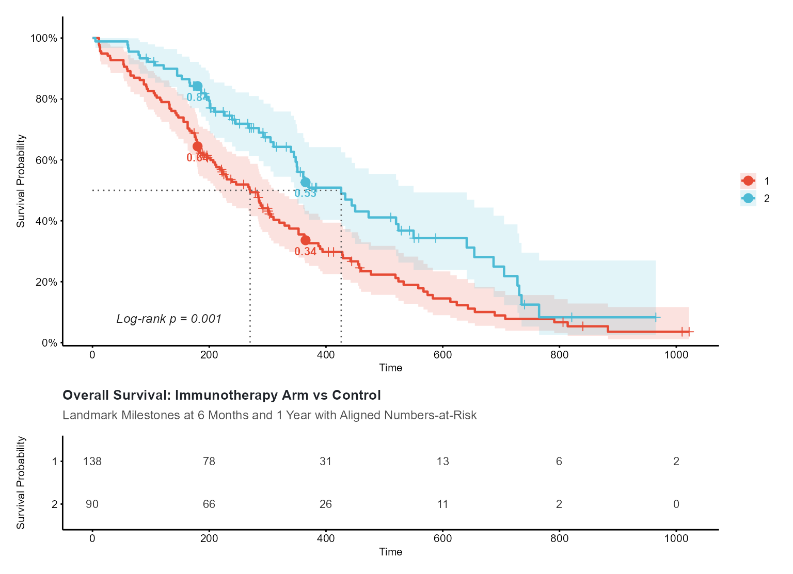
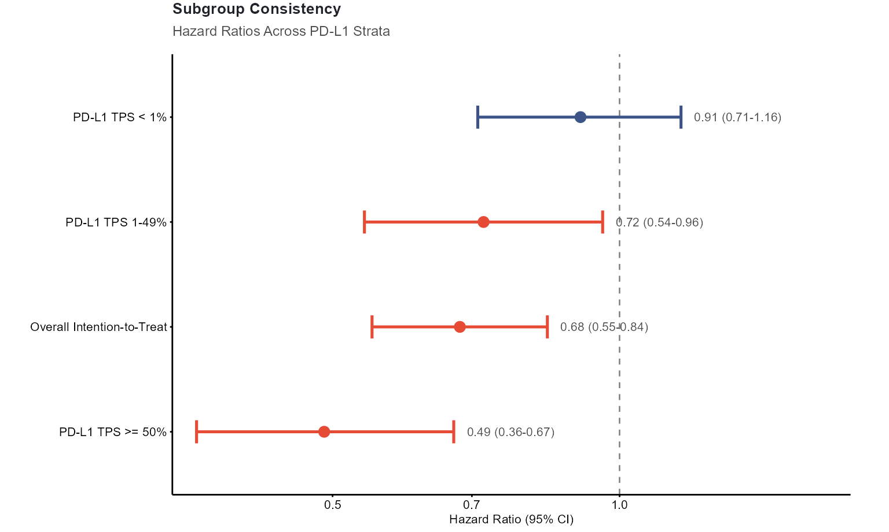
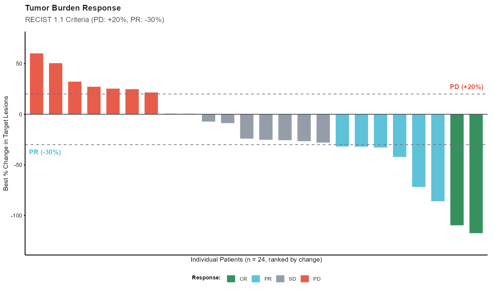
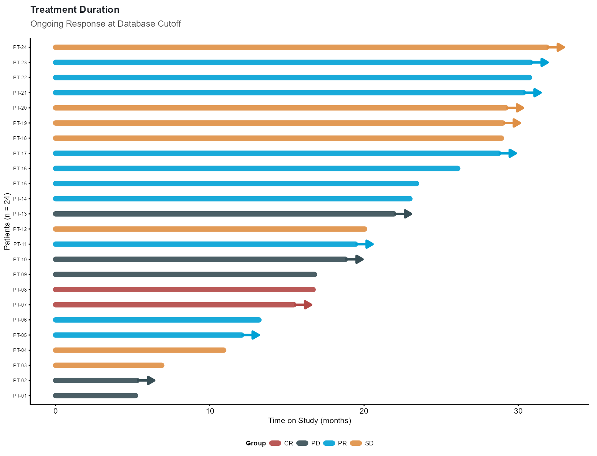
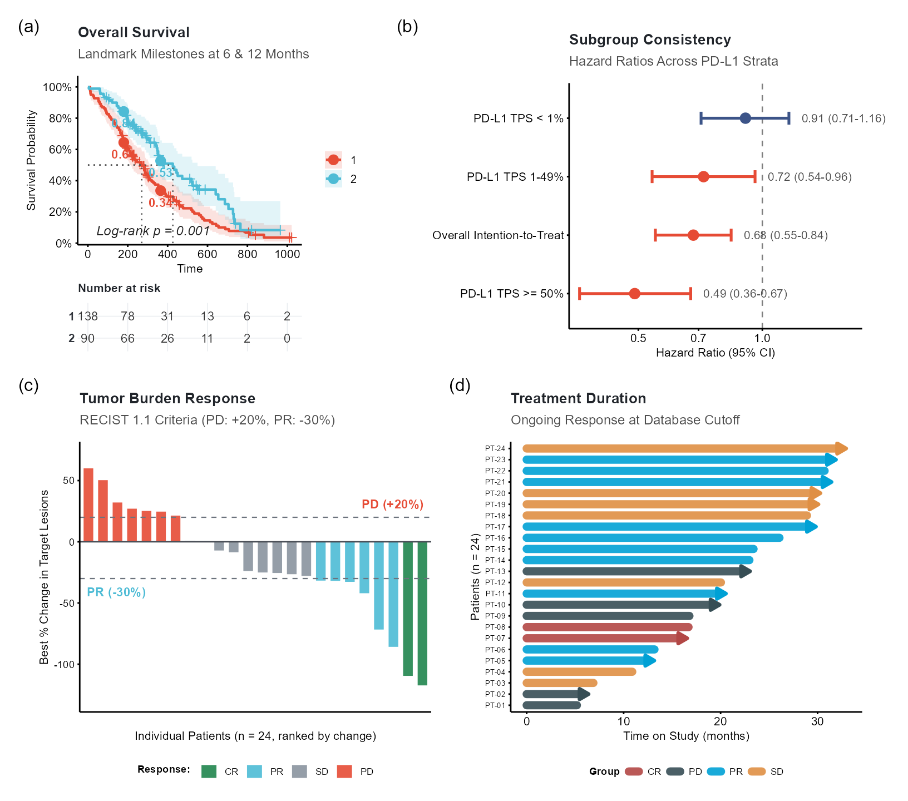

Case Study: Immuno-Oncology Biomarkers and Trial Endpoints
Lucas VHH Tran
2026-11-27
Source:vignettes/case-study-cancer-immunotherapy.Rmd
case-study-cancer-immunotherapy.RmdOverview
Immune checkpoint inhibitors (anti-PD-1 / anti-PD-L1) have altered treatment paradigms in solid tumors. Reporting results from immunotherapy clinical trials requires integrating multiple endpoint modalities:
- Overall Survival (OS): Kaplan-Meier curves with aligned numbers-at-risk and landmark milestone rates (6 months, 1 year).
- Subgroup Consistency: Multivariable Cox proportional hazards forest plots stratified by biomarker status (e.g. PD-L1 TPS).
- RECIST 1.1 Tumor Response: Waterfall plots displaying maximal target lesion shrinkage with standard and thresholds.
- Treatment Duration & Ongoing Response: Swimmer timelines indicating durable clinical responses and active therapy at database lock.
-
Multi-Panel Trial Composite: 4-panel trial outcome
figure assembled with
patchworkfor submission.
Step 1: Overall Survival (Kaplan-Meier with Aligned Risk Table)
Using the NCCTG lung cancer clinical trial cohort (), we model overall survival comparing treatment cohorts, annotating landmark survival rates at 180 and 365 days:
clitheme("nature")
p_km <- cliplot(
Surv(time, status) ~ sex,
data = lung,
type = type_km(
risk_table = TRUE,
pval = TRUE,
conf_int = TRUE,
median_line = TRUE,
milestones = c(180, 365)
),
palette = "nature",
title = "Overall Survival",
subtitle = "Landmark Milestones at 6 & 12 Months",
ylab = "Survival Probability"
)
p_km
Step 2: Treatment Consistency Across PD-L1 Subgroups (Forest Plot)
Evaluating consistency across biomarker subgroups (PD-L1 Tumor Proportion Score: , , ):
io_subgroups <- data.frame(
Variable = c("Overall Intention-to-Treat", "PD-L1 TPS >= 50%", "PD-L1 TPS 1-49%", "PD-L1 TPS < 1%"),
HR = c(0.68, 0.49, 0.72, 0.91),
CI_low = c(0.55, 0.36, 0.54, 0.71),
CI_high = c(0.84, 0.67, 0.96, 1.16),
P = c(0.0004, 0.0001, 0.024, 0.420)
)
clitheme("nature")
p_forest <- cliplot(
HR ~ Variable,
data = io_subgroups,
type = type_forest(
ref_line = TRUE,
ref_val = 1.0,
sort = TRUE,
stripe = TRUE,
show_values = TRUE
),
title = "Subgroup Consistency",
subtitle = "Hazard Ratios Across PD-L1 Strata"
) +
theme(legend.position = "none", plot.margin = margin(t = 2, r = 25, b = 4, l = 10, "pt"))
p_forest
Step 3: Tumor Burden Kinetics (Waterfall Plot)
Waterfall plots rank individual patients by the maximum percentage change in target lesion sum of diameters from baseline:
set.seed(42)
n_eval <- 24
pat_ids <- paste0("PT-", sprintf("%02d", 1:n_eval))
changes <- sort(rnorm(n_eval, mean = -22, sd = 36), decreasing = TRUE)
wf_io <- data.frame(
Patient = factor(pat_ids, levels = pat_ids),
Change = changes
)
clitheme("nature")
p_wf <- cliplot(
Change ~ Patient,
data = wf_io,
type = type_waterfall(
show_labels = FALSE,
response_thresholds = c("PD" = 20, "PR" = -30),
bar_width = 0.72
),
title = "Tumor Burden Response",
subtitle = "RECIST 1.1 Criteria (PD: +20%, PR: -30%)"
) +
labs(
x = "Individual Patients (n = 24, ranked by change)",
y = "Best % Change in Target Lesions"
) +
theme(
axis.text.x = element_blank(),
axis.ticks.x = element_blank(),
legend.position = "bottom",
legend.title = element_text(size = 7, face = "bold"),
legend.text = element_text(size = 6.5),
legend.key.size = unit(3, "mm"),
plot.margin = margin(t = 6, r = 8, b = 4, l = 4, "pt")
)
p_wf
Step 4: Swimmer Plot of Treatment Duration
Swimmer plots track patient timelines on study. Arrowheads denote patients actively continuing therapy at data cutoff:
set.seed(123)
imtrial <- data.frame(
Patient = factor(pat_ids, levels = pat_ids),
Duration = sort(runif(n_eval, 4, 32)),
BestResp = sample(c("CR", "PR", "SD", "PD"), n_eval, replace = TRUE, prob = c(0.15, 0.35, 0.30, 0.20)),
Ongoing = sample(c(TRUE, FALSE), n_eval, replace = TRUE, prob = c(0.45, 0.55))
)
clitheme("nature")
p_swim <- cliplot(
Duration ~ Patient,
data = imtrial,
type = type_swimmer(
bar_fill = "BestResp",
ongoing = "Ongoing",
bar_linewidth = 2.6
),
bar_palette = "jama",
title = "Treatment Duration",
subtitle = "Ongoing Response at Database Cutoff",
ylab = "Months from Enrollment"
) +
labs(x = "Time on Study (months)", y = "Patients (n = 24)") +
theme(
axis.text.y = element_text(size = 5.2),
legend.position = "bottom",
legend.title = element_text(size = 7, face = "bold"),
legend.text = element_text(size = 6.5),
legend.key.size = unit(3, "mm"),
plot.margin = margin(t = 6, r = 8, b = 4, l = 4, "pt")
)
p_swim
Step 5: Multi-Panel Trial Outcome Composite
We assemble all four endpoint figures into a publication composite
using patchwork:
library(patchwork)
p_composite <- (p_km | p_forest) / (p_wf | p_swim) +
plot_layout(heights = c(1.0, 1.1)) +
plot_annotation(
tag_levels = "a",
tag_prefix = "(",
tag_suffix = ")"
)
p_composite